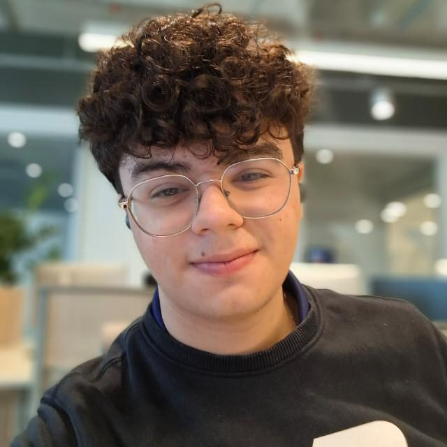

Scrum Master
Thiago Tomé da Silva
Gerenciamento & Dados
Perfil
Estudante de Engenharia da Computação focado em gerenciamento de projetos e análise de dados. Atua com mentalidade ágil, arquiteturas modernas e conteinerização.
Competências
PHP/Laravel, Vue.js, Docker, Gestão de Entregas, Liderança Técnica.
Responsabilidades
Gestão de Entregas, Governança de Design System, Estruturação de Dados (MySQL).